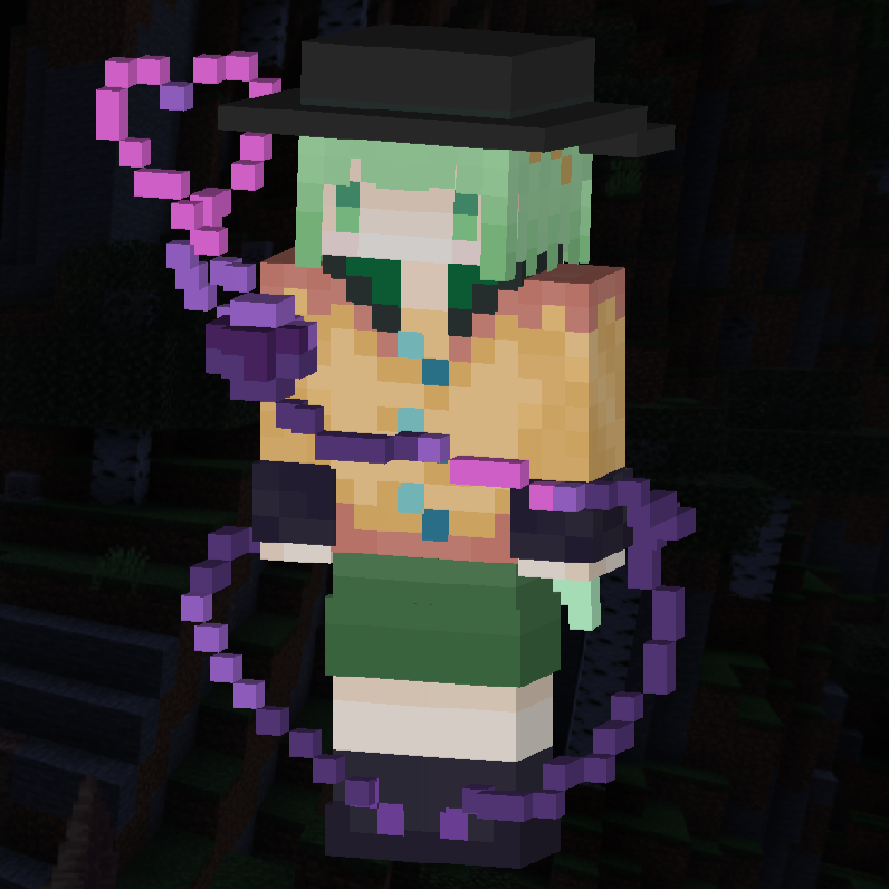

\-Rules-/ルール
注意
ルール違反は即BAN対象となる場合があります
新 高級ジェネ™ルール
1. 迷惑行為の禁止
･ チャットスパム･連続投稿
･ 他プレイヤーへの暴言･誹謗中傷
･ アイテムの窃盗･無断使用
･ 意図的なラグ発生行為
･ その他、他プレイヤーの妨害行為
2. 不正ツールの使用禁止
･ 禁止: チート･ハック･連打ツール･マクロ
･ 許可: Onix, Flarial, Latite等のPvPクライアント
3. PvPルール
･ PvP指定エリア以外での戦闘禁止
･ トラブル発生時は運営に報告(私闘禁止)
4. サーバー利用規約
･ 現金取引(RMT)の禁止
･ 不適切なスキン･名前の使用禁止
･ バグ･グリッチの悪用禁止(発見時は要報告)
･ オーバーエンチャント品の作成･使用禁止
･ 他サーバー･コンテンツの宣伝禁止
･ 複数アカウントでの不正行為禁止
商売について
商売につきましては、条件付きでOKとされています
条件
無謀なもの、ゲームバランスを壊すものなどの販売、取引は禁止
宝くじ等を販売するのであれば、あたりを最低3つ用意すること
怪しい取引、特定の人を陥れるような取引も禁止
借金システムも禁止
4Dskin
4Dskinは過度なもの(PvPに支障をきたすようなスキン、荒らしを目的をしたスキン)でなければ良いものとします。
帽子やちょっとした飾りなどの4Dskinはセーフです。
ダメな4Dskinの例

セーフ4Dskinの例